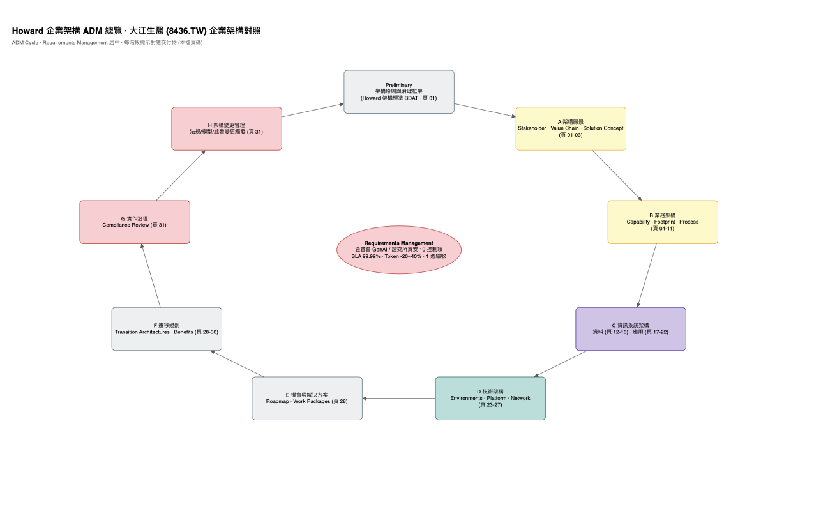

視圖 [00] · Phase A
Howard 企業架構 ADM 總覽 · 大江生醫 (8436.TW) 企業架構對照

Howard Liao Ph.D. · Preview Only
BDAT 全域規格
大江生醫 (8436.TW) 企業資訊策略與 AI 架構四階矩陣對照表
規劃主持：Howard Liao Ph.D. ｜ CISO 視角
| 架構層級 |
核心平台 / 系統中樞 |
關鍵技術職能與組件拓撲 |
資安與法規合規管制 |
Layer 1
業務通路層
|
2E 辦公協同 ｜ 2C/2B 客戶經銷 ｜ OT 工廠生產
|
財務傳票核銷、採購比價、生醫研發配方、全球經銷通路、企業 PBX 電話交換機、LINE Bot 智能應答、屏東廠發酵/萃取生產監控與 HMI 觸控面板。
|
實體網路分區隔離、OT 屏東廠 Air-Gapped、外部進線邊界過濾。
|
Layer 2
應用代理層
|
HowardAGent
企業級智慧代理中樞
|
95% 高準確率 Agentic RAG（支援 25 種檔案格式）、OCR Agent 傳票自動化借貸入帳、客服 Copilot 自動回覆轉真人、採購比對防貪腐、總務行政 SOP 工作流、Text2SQL 數據查詢、自有 MCP Hub 工具對接。
|
ISO 27001 / 27701 國際雙認證、強制 Citations 來源引用杜絕法規幻覺、六大 CI/CD 靜態動態代碼掃描、支援研華/雲達地端私有部署。
|
Layer 2.5
API 防禦層
|
APISIX ＋ Keycloak ＋ HowardCyberSecurity
|
Apache APISIX 微秒級極致延遲網關（<1ms）、etcd 熱更新路由零停機、企業 AD/LDAP 統一 SSO 單一登入、後端服務包裝為標準 MCP Tools。
|
強制 MFA 多因子認證、生醫部門 RBAC 最小權限精細控管、影子 API 自動清點消滅盲點、AI 基線即時阻斷 BOLA 越權攻擊、CI/CD 測試左移主動滲透測試。
|
Layer 3
網關與預測層
|
HowardRoute ｜ HowardPro
模型總機 ＋ 預測核心
|
HowardRoute：單一標準端點聚合 250+ 模型、0% Markup 直通原廠定價免各部門刷卡、Smart Routing 智慧動態任務分流實測省 20~40% 成本、毫秒級自動 Failover 備援抗 429 併發。
HowardPro：AutoML 物理調機預測（Excel/CSV 1 週落地）、發酵萃取最佳化參數推薦、活性成分虛擬量測 (VM)、機台設備預防保養 (PdM)、Domain Twin™ 數位員工傳承老師傅經驗。
|
零資料保留 (Zero Data Retention) 提示詞記憶體過路不儲存、OT 屏東廠 Air-Gapped 實體隔離配方絕不上公有雲、AILM 監控模型漂移與偏差根因分析 (RCA)。
|
Layer 4
數據底座層
|
雙環 Data Bus ＋ 核心算力存儲底座
|
IT 環：Apache Kafka 持久化零丟包動脈；OT 環：EMQX MQTT + OPC UA 機台感測採集；CDC：Debezium 零侵入監聽 SAP 交易日誌；數據目錄：DataHub 元數據目錄與血緣追蹤；主數據：SAP MDG 原料批號管理；核心庫：SAP ERP、工廠 MES/WMS、SCADA/PLC、Milvus/Qdrant 規章向量庫。
|
生醫法規合規 ALCOA+ 原則、產線 Raw Data WORM 永久不可篡改（符合 GMP/FDA 21 CFR Part 11 審計）、Immuta 動態欄位級遮蔽 (Masking)、關鍵資料 3-2-1 備份、異地災難復原 RTO < 4h。
|
核心四大柱：
● HowardAGent (應用中樞)
● HowardRoute (模型網關)
● HowardPro (預測核心)
● HowardCyberSecurity (資安大腦)
⚖️ 100% 遵從證券交易所資通安全管控指引 ＆ 金管會生成式 AI 核心原則